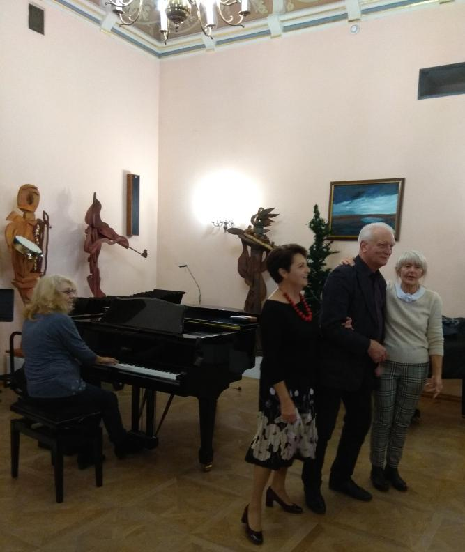
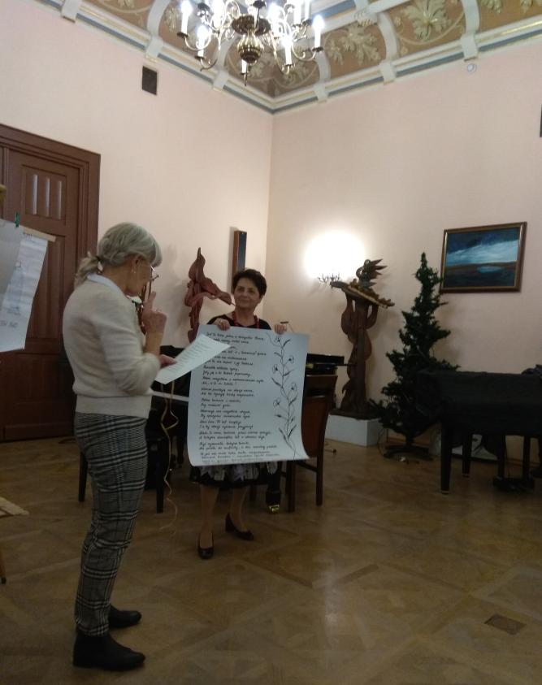
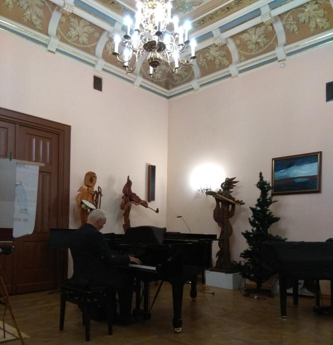
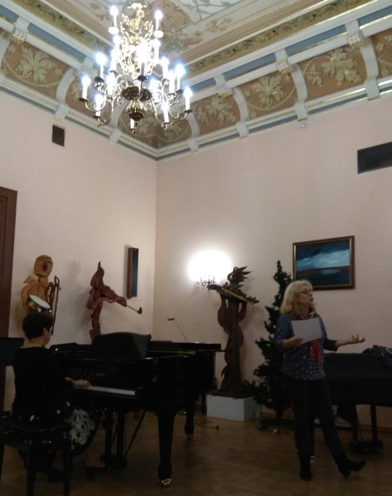

A tymczasem w Cameracie...
.
2019-12-04
Dzisiaj próba nietypowa. Prześpiewaliśmy utwory na jutrzejszy koncert w Niepołomicach i resztę próby opanowali solenizanci i jubilaci, którzy bardzo dobrze się przygotowali. Więc dla nich sto lat.

Występy były wspaniałe. Najpierw Ewa z Basią.

Teraz ze wspaniałym koncertem wystąpił Andrzej.

Do tablicy wywołana została również Dyrygentka (chociaż dzisiaj nie była solenizantką ani jubilatką)
i musiała zaśpiewać tekst Ewy do melodii piosenki „Dziewczęta z Barcelony”. Wyszło jak zawsze super no i wielkie brawa od Cameraty.

I na koniec dawny , ale cały czas aktualny wiersz Ewy pt.SZARA RZECZYWISTOŚĆ „CAMERATY”
KIEDY SZÓSTA BIJE, MAŁA GRUPKA WCHODZI.
TO, CI PUNKTUALNI - I STARSI I MŁODZI.
INNI ZNÓW SIĘ SPÓŹNIĄ, PRZESZKADZAJĄC RESZCIE,
JAK TRUDNO Z TYM WALCZYĆ - NA SŁOWO UWIERZCIE.
ALE JUŻ ŚPIEWAMY - Z C-DUR LUB Z A-MOLA,
TUMBA, TUMBA, TUMBA, DO – RE – MI – FASOLA .
POTEM JESZCZE KILKA ĆWICZONEK W EUFORII
I JUŻ CIĘŻKA PRACA NAD „ZRĘBAMI” GLORII.
PRÓBUJEMY OSTRO, LECZ COŚ NIE WYCHODZI.
A TO PSUJĄ STARSI, INNYM RAZEM MŁODZI.
NASZA PANI IZA NAGLE TRACI NERWY,
TŁUMACZĄC, JAK ŚPIEWAĆ POPRAWNIE, BEZ PRZERWY.
WRESZCIE WYKRZYKUJE - WASZ ŚPIEW JEST FATALNY !
DZIŚ ŚPIEWACIE PAŃSTWO JAK CHÓR PARAFIALNY!
JAK TE PRZYSŁOWIOWE - DZIADY POD KOŚCIOŁEM.
A JA TAK UCZYŁAM WSZYSTKIEGO Z MOZOŁEM.
PO CHWILI JEDNAKŻE, GDY EMOCJE SPADNĄ,
KIERUJE SIĘ DO NAS MOWĄ BARDZIEJ ŁADNĄ.
„DZIÓBECZKI KOCHANE” - WCZUWAJCIE SIĘ PROSZĘ,
TAKIEJ NIECHLUJNOŚCI NAPRAWDĘ NIE ZNOSZĘ.
OTWÓRZCIE TE GĘBY SZEROKO JAK WROTA,
INACZEJ NA DIABŁA TA CAŁA ROBOTA.
TEKSTY WYMAWIAJCIE Z PRECYZJĄ, DOKŁADNIE,
WTEDY TO MELODIA WYŁONI SIĘ ŁADNIE.
PANIE! WYPYCHAJCIE TE BRZUCHY DO PRZODU,
PRZEPONY DO GÓRY, ABY GŁOS OD SPODU
WYDOBYŁ SIĘ PRAWIE Z ENERGIĄ WULKANU…
ALE, JA MAM TAKŻE SŁÓWECZKO DO PANÓW.
OJ, NIECZYSTO – KOCHANI - SŁYSZĘ KILKA „C”
I JUŻ MI SIĘ Z TEGO PRAWIE PŁAKAĆ CHCE.
ZNÓW ŚPIEWACIE CIĘŻKO I BARDZO SIERJOŹNIE,
WCHODZICIE NIEPEWNIE I BARDZO OSTROŻNIE.
TO SIĘ DO WSZYSTKICH PANÓW, DZISIAJ, TYCZY…
CHOLERA! KTÓRY ZNOWU MI TAM RYCZY?
TU MA BYĆ „PIANO”, A JA „FORTE” SŁYSZĘ.
PROSZĘ O SPOKÓJ PANIE! I O CISZĘ.
GADUŁY DOSYĆ – GADAĆ MOŻNA W PRZERWIE.
SŁOWO DAJĘ – JAK SIĘ DZISIAJ NA WAS WNERWIĘ
POLECĄ PIÓRA!. WRESZCIE CHWILA CISZY
I TYLKO MUCHY BRZĘCZENIE SIĘ SŁYSZY.
ZBIERAMY SIĘ W SOBIE - PEŁNA KONCENTRACJA.
ŚPIEWAMY ANIELSKO. „PAŃSTWO - REWELACJA!
TERAZ ŚPIEWACIE - NIE JAK DOTĄD WRZESZCZYCIE,
WIĘC ZAPAMIĘTAJCIE TO NA CAŁE ŻYCIE” .
I ZNÓW RADOŚĆ W CHÓRZE NAS OPANOWAŁA.
PANI DYRYGENTKA PROMIENIEJE CAŁA.
ALE Z DRUGIEJ STRONY… ONA TYLKO WIE,
ŻE RAZ PIĘKNIE WYJDZIE, INNYM RAZEM NIE.
BOWIEM „CAMERATA” - CHOCIAŻ NIEBANALNA
JEST NIESTETY CAŁKIEM NIEPRZEWIDYWALNA.
TAKI JEST NASZ UROK, STALE NIESPODZIANKI
PRAWDA DRODZY KOLEDZY, MIŁE KOLEŻANKI ?
MIMO OPEERÓW NASZEJ DYRYGENTKI
NIKT DO ŚPIEWU NIE TRACI ZAPAŁU, NI CHĘTKI.
POZWÓLCIE ZATEM, ŻE ZA GOETHTE'M POWTÓRZĘ
JEGO TRAFNĄ OPINIĘ O ŚPIEWANIU W CHÓRZE.
„GDZIE SŁYCHAĆ ŚPIEW, TAM WEJDŹ, TAM LUDZIE DOBRE SERCA MAJĄ”
PS.
I Z TYMŻE STWIERDZENIEM TRUDNO SIĘ NIE ZGODZIĆ
ZATEM TRZEBA NADAL NAM NA PRÓBY CHODZIĆ.
BO CHOĆ TEGO ŚPIEWU RÓŻNE SĄ WYNIKI,
TO NAPEWNO MAMY SERCE DO MUZYKI.
Sami zobczcie, czyż u nas nie jest fajnie :).

© Stowarzyszenie Muzyczne Chór Camerata Wieliczka
Projekt i wykonanie:  Prowadzenie strony oraz zdjęcia: Małgorzata Wysocka-Cebula
Prowadzenie strony oraz zdjęcia: Małgorzata Wysocka-Cebula